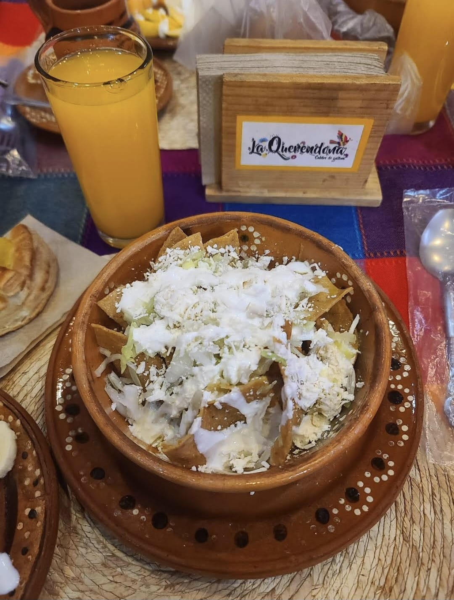
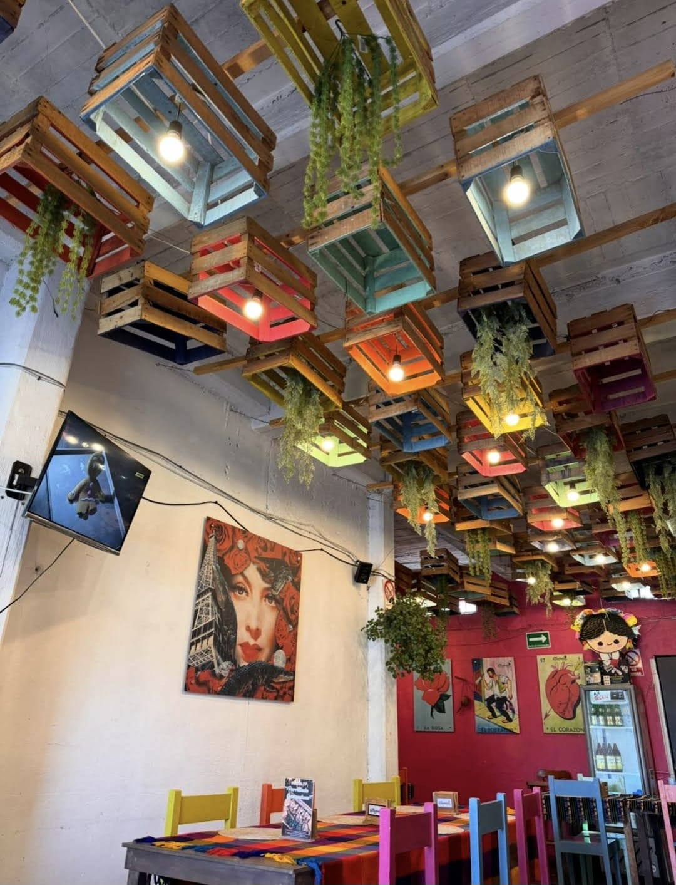
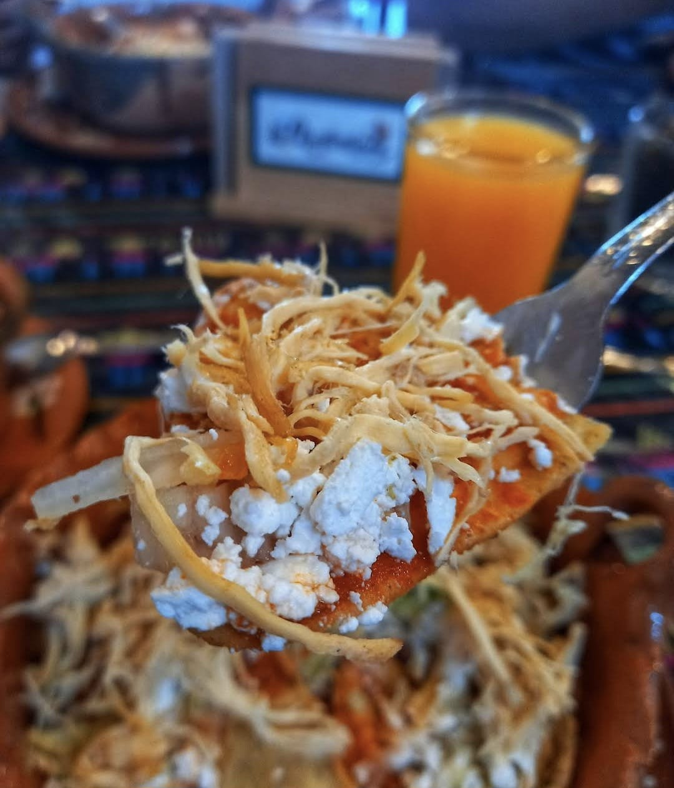
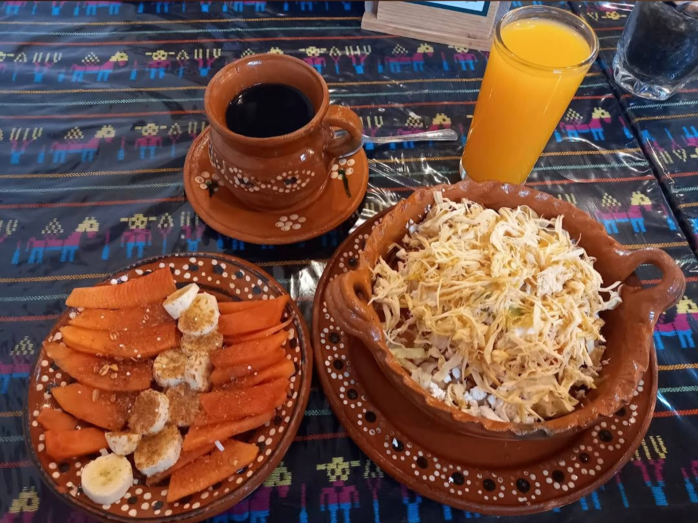
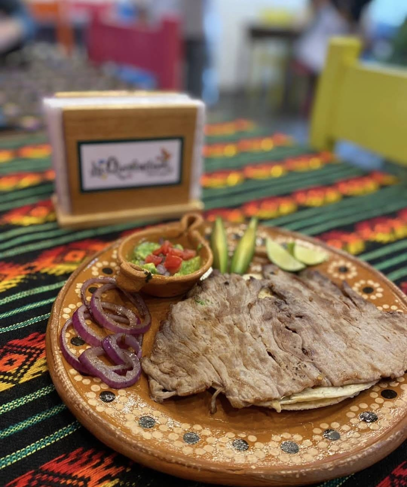
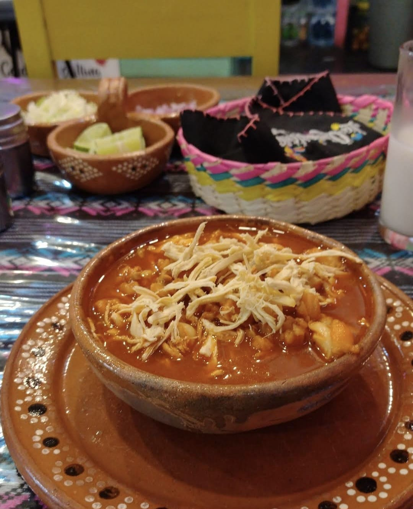

Desayunos tradicionales
Chilaquiles, café, jugos y sabores de mañana servidos con el toque de casa.

BIENVENIDO A
Un espacio lleno de color, sabor casero y detalles mexicanos para disfrutar desayunos, antojitos y comida tradicional en un ambiente familiar.
Esta sucursal conserva la esencia de La Querendona con mesas coloridas, barro artesanal y platillos servidos con sazón familiar. Cada visita se siente cercana, alegre y hecha para compartir.



Chilaquiles, café, jugos y sabores de mañana servidos con el toque de casa.

Recetas mexicanas servidas en barro, con porciones generosas y presentación cálida.
Un comedor con identidad mexicana, luces, detalles artesanales y un ambiente familiar.
Una mirada a los platillos y detalles que hacen especial a esta sucursal: barro, mesa mexicana, jugos frescos y antojitos preparados para compartir.

Mantuvimos el mismo menú de navegación para que puedas explorar platillos, conocer al equipo o hacer una reservación desde cualquier sección.